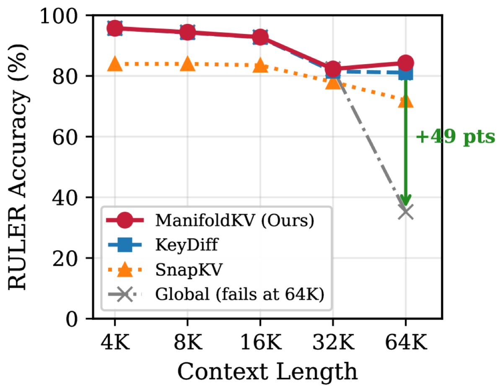

Why it matters왜 중요한가
Cosine similarity normalizes away vector magnitude — and that discarded magnitude is exactly the signal that marks the tokens worth keeping.
코사인 유사도는 벡터의 크기(magnitude)를 정규화로 없애 버린다 — 그런데 그 버려진 크기야말로 살려둘 만한 토큰을 가리키는 신호다.
The KV-cache grows linearly with context length (8.6 GB for Llama-3.1-8B at 64K), so eviction methods must answer one question: which tokens to keep? Recent geometric scorers retain "outlier" keys, but they measure outlier-ness with cosine distance to the centroid — which only sees angular deviation. A token that points the same way as the centroid but is 10× larger gets cosine score = 1 (maximum similarity) and is wrongly evicted. The authors find semantically important tokens (entities, numbers) carry unusual magnitude too. ManifoldKV's fix is almost embarrassingly simple — score by L2 distance instead of cosine — yet it cleanly recovers the two regimes where cosine fails: multi-key retrieval and very long contexts.
KV-cache는 문맥 길이에 선형으로 증가하므로(Llama-3.1-8B의 64K에서 8.6GB) eviction 방법은 단 하나의 질문에 답해야 한다: 어떤 토큰을 남길까? 최근의 기하 scorer는 "outlier" 키를 남기지만, outlier 여부를 centroid에 대한 코사인 거리로 측정한다 — 이는 각도(angular) 편차만 본다. centroid와 같은 방향이지만 크기가 10배인 토큰은 코사인 점수 = 1(최대 유사도)을 받아 잘못 퇴출된다. 저자들은 의미적으로 중요한 토큰(개체명·숫자)이 특이한 크기도 함께 갖는다는 것을 발견했다. ManifoldKV의 해법은 거의 민망할 만큼 단순하다 — 코사인 대신 L2 거리로 점수화 — 그러나 코사인이 실패하는 두 영역(다중 키 검색, 초장문 문맥)을 깔끔하게 회복한다.

By the numbers핵심 숫자
(20% compression, w/ AdaKV)RULER 정확도 @ 4K–16K
(20% 압축, AdaKV 사용)
3-key NIAH @ 50% comp.3-key NIAH @ 50% 압축
KeyDiff 대비 우위(점)
(35.2% → 84.3%, windowed)64K 회복(점)
(35.2% → 84.3%, windowed)
SnapKV (84.0%) on RULER어텐션 기반 SnapKV(84.0%)
대비 우위(점) on RULER
(Two-NN: 8.2–8.9, all archs)보편적 key manifold 차원
(Two-NN: 8.2–8.9, 전 모델)
· <0.5ms latency @ 64K코드 3줄 · 학습 불필요
· 64K에서 <0.5ms 지연
Results — L2 wins exactly where cosine breaks결과 — 코사인이 깨지는 바로 그곳에서 L2가 이긴다
| Setting | ManifoldKV | KeyDiff | Δ |
|---|---|---|---|
| RULER overall (20%, AdaKV) | 95.73 | 95.66 | +0.07 |
| 3-key NIAH (50% comp.) | 92.4 | 77.0 | +15.4 |
| 2-key NIAH (50% comp.) | 99.8 | 92.6 | +7.2 |
| 64K (Windowed-4K, 25%) | 84.29 | 81.09 | +3.2 |
| Distance metric (standalone) | 92.7 | 52.8 | +39.9 |
In one diagram한 장의 그림
The idea: magnitude is signal, not noise아이디어: 크기(magnitude)는 잡음이 아니라 신호다
Magnitude-Aware Scoring
Expanding ‖kᵢ − μ‖² = rᵢ² + ‖μ‖² − 2rᵢ‖μ‖·cos(kᵢ,μ) shows L2 keeps the magnitude term rᵢ that cosine cancels. So radial outliers (parallel to μ but extreme in length) are caught — cosine treats k=10μ and k=0.1μ as identical, L2 separates them 10×.
‖kᵢ − μ‖² = rᵢ² + ‖μ‖² − 2rᵢ‖μ‖·cos(kᵢ,μ)로 전개하면, 코사인이 상쇄하는 magnitude 항 rᵢ를 L2가 보존함을 알 수 있다. 그래서 radial outlier(μ와 평행하나 길이가 극단적)가 잡힌다 — 코사인은 k=10μ와 k=0.1μ를 동일하게 보지만, L2는 10배 차이로 구분한다.
Centroid Dilution → Windowing
At 64K the global centroid averages over many topics, becoming a "center of mass" that means nothing — all tokens look equidistant and accuracy collapses to 35.2%. WindowedManifoldKV computes a local centroid per 4K window, preserving discriminative power and recovering to 84.3%.
64K에서 global centroid는 여러 주제를 평균내어 아무 의미 없는 "center of mass"가 된다 — 모든 토큰이 등거리처럼 보여 정확도가 35.2%로 붕괴한다. WindowedManifoldKV는 4K 창마다 지역 centroid를 계산해 변별력을 유지, 84.3%로 회복한다.
How it works어떻게 작동하나
- Compute the centroidcentroid 계산Average all key vectors in the cache: μ = (1/N)Σ kᵢ — O(Nd), one mean per head.캐시 내 모든 키 벡터를 평균: μ = (1/N)Σ kᵢ — O(Nd), 헤드당 평균 1회.
- Score by L2 distanceL2 거리로 점수화sᵢ = ‖kᵢ − μ‖₂ for every token. Tokens far from the centroid (high score) are the geometric outliers to retain.모든 토큰에 sᵢ = ‖kᵢ − μ‖₂. centroid에서 먼(점수 높은) 토큰이 남길 기하적 outlier.
- Top-K evictionTop-K 퇴출Keep the M = ⌊(1−ρ)N⌋ highest-scoring tokens (e.g. 80% at 20% compression); evict the rest. O(N log N) sort.점수 상위 M = ⌊(1−ρ)N⌋개 유지(예: 20% 압축 시 80%); 나머지 퇴출. O(N log N) 정렬.
- For 64K+: window the centroid64K+에서는 centroid를 창 단위로Slide a 4K window; compute a local μ_w inside each and score against it, then select globally — restoring discriminative power lost to dilution.4K 창을 슬라이딩; 각 창 안에서 지역 μ_w를 계산해 점수화 후 전역 선택 — dilution으로 잃은 변별력 복원.
What to take away그래서, 가져갈 것
A 3-line, training-free drop-in. Swapping cosine for L2 needs no calibration, adds <0.5ms at 64K, and slots straight into AdaKV — trivial to adopt.
코드 3줄, 학습 불필요한 drop-in. 코사인→L2 교체는 보정이 필요 없고 64K에서 <0.5ms만 추가, AdaKV에 바로 끼운다 — 도입이 매우 쉽다.
Magnitude carries semantics. The +40-pt jump from cosine to L2 in standalone mode says vector length — not just direction — flags entities and numbers worth keeping.
크기에 의미가 담겨 있다. standalone에서 코사인→L2의 +40점 도약은, 방향뿐 아니라 벡터 길이가 살릴 만한 개체·숫자를 가리킨다는 뜻.
Centroids dilute at scale. A global mean over 64K mixed tokens is meaningless; local windows are the simple cure — a useful lesson beyond KV caching.
centroid는 규모가 커지면 희석된다. 64K 혼합 토큰의 전역 평균은 무의미하다; 지역 창이 단순한 해법 — KV 캐싱을 넘어 유용한 교훈.
Universal ~9D manifold. Key vectors live on an 8–9D manifold across Llama/Qwen/Gemma/Ministral, explaining zero-shot cross-model transfer (±0.3%).
보편적 ~9D manifold. 키 벡터는 Llama/Qwen/Gemma/Ministral 전반에서 8–9D manifold에 존재 — 제로샷 교차모델 전이(±0.3%)를 설명.